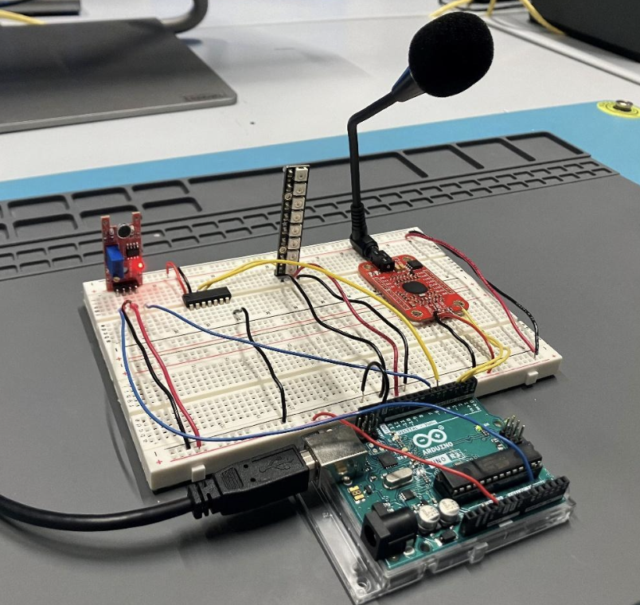
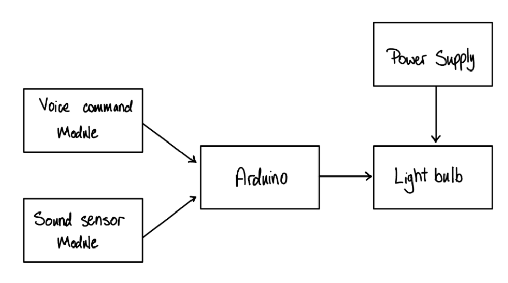
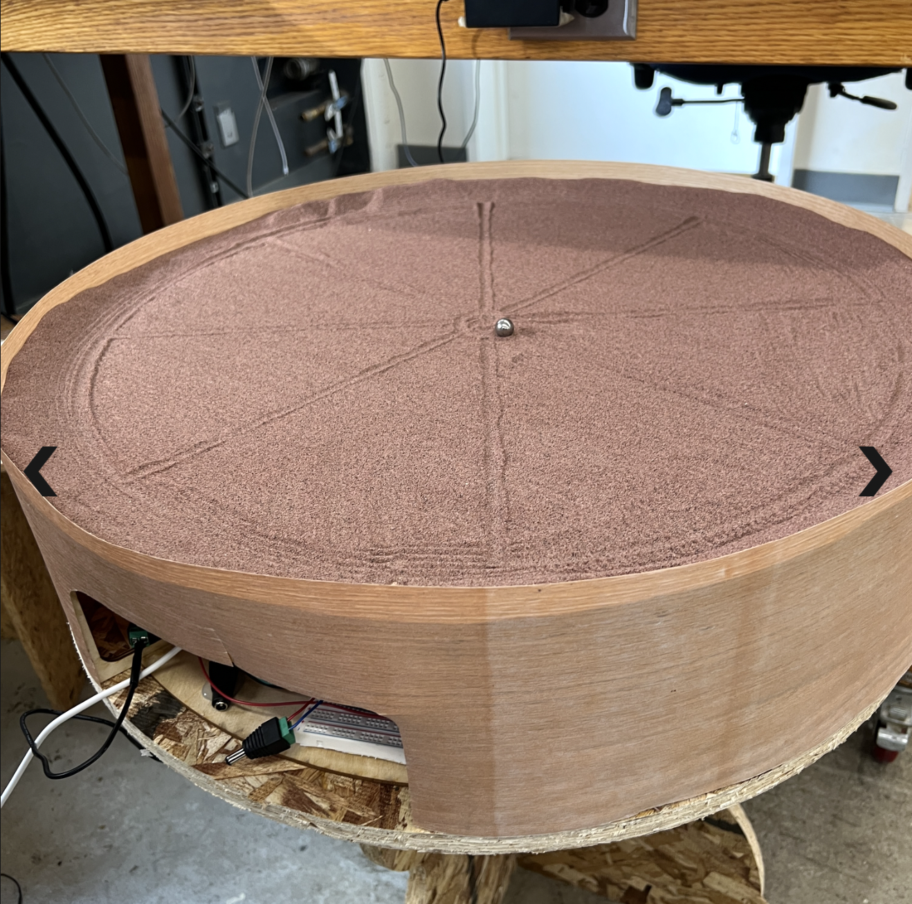

Side Projects
A collection of smaller projects in hardware, programming, and interactive design.
Rise and Shine
The Rise and Shine project focused on designing an interactive, sound-activated lighting system that improves the waking experience by simulating a natural sunrise. The system integrates an Arduino Uno, sound sensor, voice recognition module, and Neopixels to create a responsive and personalized wake-up environment.
When an alarm sound is detected, the system gradually increases light brightness using Pulse Width Modulation (PWM) to mimic a sunrise. Additionally, a voice recognition module allows users to control the system through commands such as “snooze,” which dims the light instead of turning it off completely.
The project involved sensor calibration, circuit design, and embedded programming. I contributed to all the parts of the project, but mainly worked on sensor calibration and circuit design. I worked particularly in ensuring accurate sound detection and selecting appropriate lighting components. This project strengthened my skills in circuits design, signal processing, and human-centered design thinking.
- Integrated sensors, Neopixels
- Built an embedded system using Arduino
- Explored voice interaction and user-centered design


FindYourPeople
Privacy-centered web application designed to connect users based on shared interests.
- Built the app with Python and Flask as part of my CS50 personal final project
- Created user matching logic based on shared inputs, and one can only find another user when they have at least one shared feature
- Focused on privacy and meaningful connection, which was moved by experience moving to a new country
Machine Building
This project involved designing and building an automated Zen Garden drawing machine, a 2-axis system that creates patterns in sand using a magnetically controlled steel ball. The system combined mechanical design, digital fabrication, and embedded programming to produce smooth, programmable motion.
The machine used an ESP32 microcontroller and two stepper motors to control rotational and linear motion. A lead screw mechanism enabled precise linear positioning, while a rotating base (supported by a lazy susan bearing) allowed circular movement. I worked mostly on figuring out how to write code for the stepper motor so that it balances speed, precision and smoothness as well as how to integrate them in the circuit.
The project required iterative prototyping using 3D printing, laser cutting, and mechanical assembly, along with tuning motor parameters to balance speed, precision, and smoothness. This experience strengthened my skills in mechatronics, system integration, and rapid prototyping, as well as debugging across hardware, software, and mechanical systems.

To See More on The Group Project